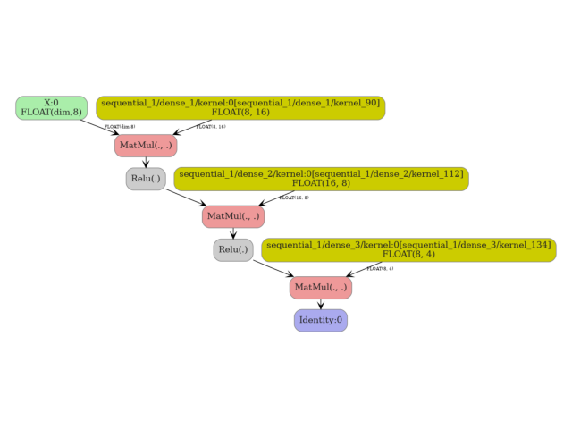

Note
Go to the end to download the full example code.
Converting a TensorFlow/Keras model to ONNX¶
yobx.tensorflow.to_onnx() converts a TensorFlow/Keras
model into an onnx.ModelProto that can be executed with any
ONNX-compatible runtime.
The converter works by tracing the Keras model with
tf.function / get_concrete_function to
obtain the underlying TensorFlow computation graph. Each TF operation in that
graph is then mapped to an equivalent ONNX node by a registered converter.
Supported layers and activations (see yobx.tensorflow for the full
registry):
tf.keras.layers.Dense— converted toMatMul(+Addwhen the bias is non-zero after optimisation)Activations:
relu,sigmoid,tanh,softmax,relu6tf.keras.Sequential— chains the above step-by-step
The workflow is:
Build (and optionally train) a Keras model.
Call
yobx.tensorflow.to_onnx()with a representative dummy input (a NumPy array) so it can infer input dtype and shape.Run the ONNX model with any ONNX runtime — this example uses onnxruntime.
Verify that the ONNX outputs match Keras’ predictions.
import tensorflow as tf
import numpy as np
import onnxruntime
from yobx.doc import plot_dot
from yobx.tensorflow import to_onnx
Remove this line to run on GPU.
tf.config.set_visible_devices([], "GPU")
1. Build a simple Dense layer¶
We start with the simplest possible model: a single
Dense layer with no activation function
(linear/identity), so the conversion reduces to MatMul + Add.
rng = np.random.default_rng(0)
X = rng.standard_normal((5, 4)).astype(np.float32)
model_linear = tf.keras.Sequential([tf.keras.layers.Dense(3, input_shape=(4,))])
onx_linear = to_onnx(model_linear, (X,))
print("Opset :", onx_linear.opset_import[0].version)
print("Number of nodes :", len(onx_linear.graph.node))
print("Node op-types :", [n.op_type for n in onx_linear.graph.node])
print(
"Graph inputs :",
[(inp.name, inp.type.tensor_type.elem_type) for inp in onx_linear.graph.input],
)
print("Graph outputs :", [out.name for out in onx_linear.graph.output])
~/vv/this312/lib/python3.12/site-packages/keras/src/layers/core/dense.py:106: UserWarning: Do not pass an `input_shape`/`input_dim` argument to a layer. When using Sequential models, prefer using an `Input(shape)` object as the first layer in the model instead.
super().__init__(activity_regularizer=activity_regularizer, **kwargs)
Opset : 21
Number of nodes : 1
Node op-types : ['MatMul']
Graph inputs : [('X:0', 1)]
Graph outputs : ['Identity:0']
Run and compare¶
The ONNX input name follows TensorFlow’s tensor-naming convention:
"{name}:0" where name is the name passed to to_onnx()
(defaults to "X").
ref = onnxruntime.InferenceSession(
onx_linear.SerializeToString(), providers=["CPUExecutionProvider"]
)
(result_linear,) = ref.run(None, {"X:0": X})
expected_linear = model_linear(X).numpy()
print("\nKeras output (first row):", expected_linear[0])
print("ONNX output (first row):", result_linear[0])
assert np.allclose(expected_linear, result_linear, atol=1e-5), "Mismatch!"
print("Outputs match ✓")
Keras output (first row): [ 0.26318607 0.05313046 -0.03300287]
ONNX output (first row): [ 0.26318607 0.05313047 -0.03300286]
Outputs match ✓
2. Multi-layer MLP with activations¶
Next we build a deeper Sequential model that exercises
the Relu, MatMul and Add ONNX converters together.
X_train = rng.standard_normal((80, 8)).astype(np.float32)
mlp = tf.keras.Sequential(
[
tf.keras.layers.Dense(16, activation="relu", input_shape=(8,)),
tf.keras.layers.Dense(8, activation="relu"),
tf.keras.layers.Dense(4),
]
)
_ = mlp(X_train)
onx_mlp = to_onnx(mlp, (X_train[:1],))
op_types = [n.op_type for n in onx_mlp.graph.node]
print("\nOp-types in the MLP graph:", op_types)
assert "MatMul" in op_types
assert "Relu" in op_types
Op-types in the MLP graph: ['MatMul', 'Relu', 'MatMul', 'Relu', 'MatMul']
Verify predictions on a held-out batch.
X_test = rng.standard_normal((20, 8)).astype(np.float32)
ref_mlp = onnxruntime.InferenceSession(
onx_mlp.SerializeToString(), providers=["CPUExecutionProvider"]
)
(result_mlp,) = ref_mlp.run(None, {"X:0": X_test})
expected_mlp = mlp(X_test).numpy()
assert np.allclose(expected_mlp, result_mlp, atol=1e-5), "MLP mismatch!"
print("MLP predictions match ✓")
MLP predictions match ✓
3. Dynamic batch dimension¶
By default to_onnx() marks the first axis of every input as a
dynamic (symbolic) dimension. You can also pass dynamic_shapes
explicitly to name the dynamic axis, which is useful when deploying the
model with variable-length batches.
onx_dyn = to_onnx(mlp, (X_train[:1],), dynamic_shapes=({0: "batch"},))
input_shape = onx_dyn.graph.input[0].type.tensor_type.shape
batch_dim = input_shape.dim[0]
print("\nBatch dimension param :", batch_dim.dim_param)
print("Batch dimension value :", batch_dim.dim_value)
assert batch_dim.dim_param, "Expected a named dynamic dimension"
# The converted model still produces correct results for any batch size.
ref_dyn = onnxruntime.InferenceSession(
onx_dyn.SerializeToString(), providers=["CPUExecutionProvider"]
)
for n in (1, 7, 20):
X_batch = rng.standard_normal((n, 8)).astype(np.float32)
(out,) = ref_dyn.run(None, {"X:0": X_batch})
expected = mlp(X_batch).numpy()
assert np.allclose(expected, out, atol=1e-5), f"Mismatch for batch={n}"
print("Dynamic-batch model verified for batch sizes 1, 7, 20 ✓")
Batch dimension param : dim
Batch dimension value : 0
Dynamic-batch model verified for batch sizes 1, 7, 20 ✓
4. Custom op converter¶
The extra_converters argument allows you to override or extend the
built-in op converters. Here we replace the Relu converter with a
custom one that clips the output at 6 (i.e. Relu6) instead of the
standard unbounded rectifier.
def custom_relu_converter(g, sts, outputs, op):
"""Custom converter: replace Relu with Clip(0, 6)."""
return g.op.Clip(
op.inputs[0].name,
np.array(0.0, dtype=np.float32),
np.array(6.0, dtype=np.float32),
outputs=outputs,
name="custom_relu6",
)
onx_custom = to_onnx(mlp, (X_train[:1],), extra_converters={"Relu": custom_relu_converter})
custom_op_types = [n.op_type for n in onx_custom.graph.node]
print("\nOp-types with custom converter:", custom_op_types)
assert "Clip" in custom_op_types, "Expected Clip node from custom converter"
assert "Relu" not in custom_op_types, "Relu should have been replaced"
print("Custom converter verified ✓")
Op-types with custom converter: ['MatMul', 'Clip', 'MatMul', 'Clip', 'MatMul']
Custom converter verified ✓
5. Visualize the ONNX graph¶
plot_dot(onx_mlp)

Total running time of the script: (0 minutes 4.007 seconds)
Related examples